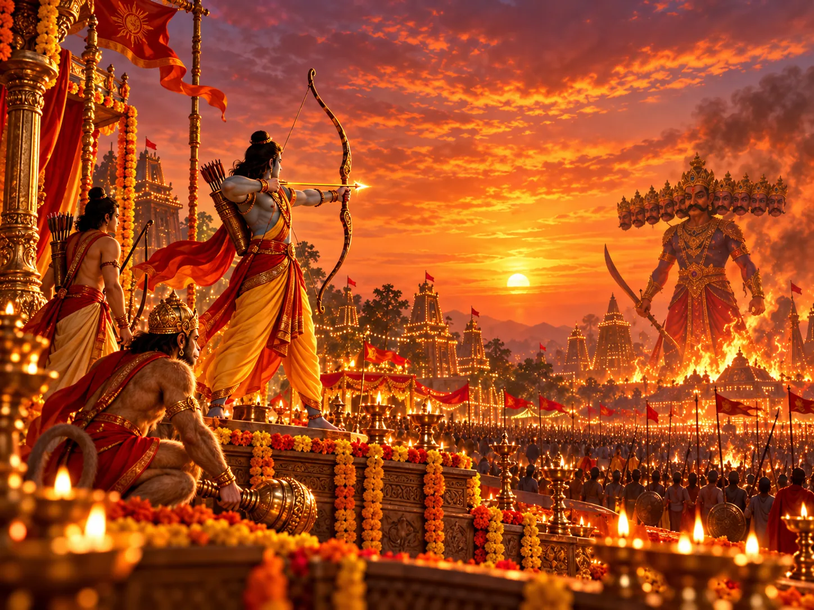
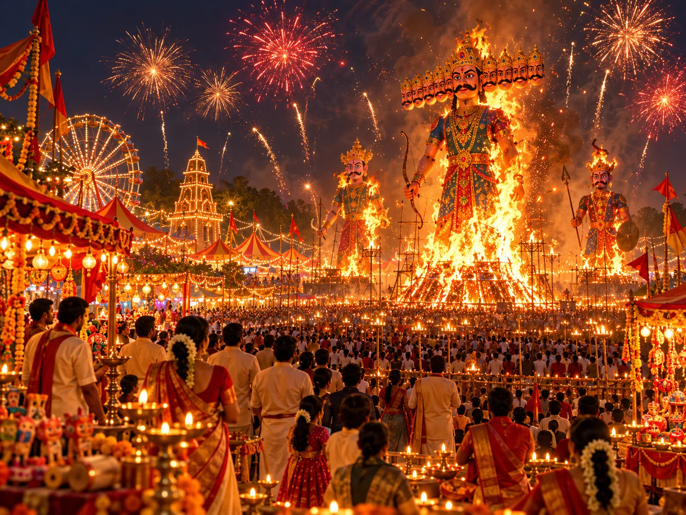
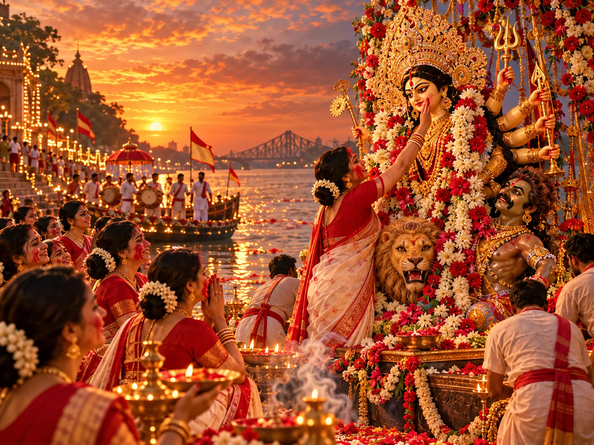
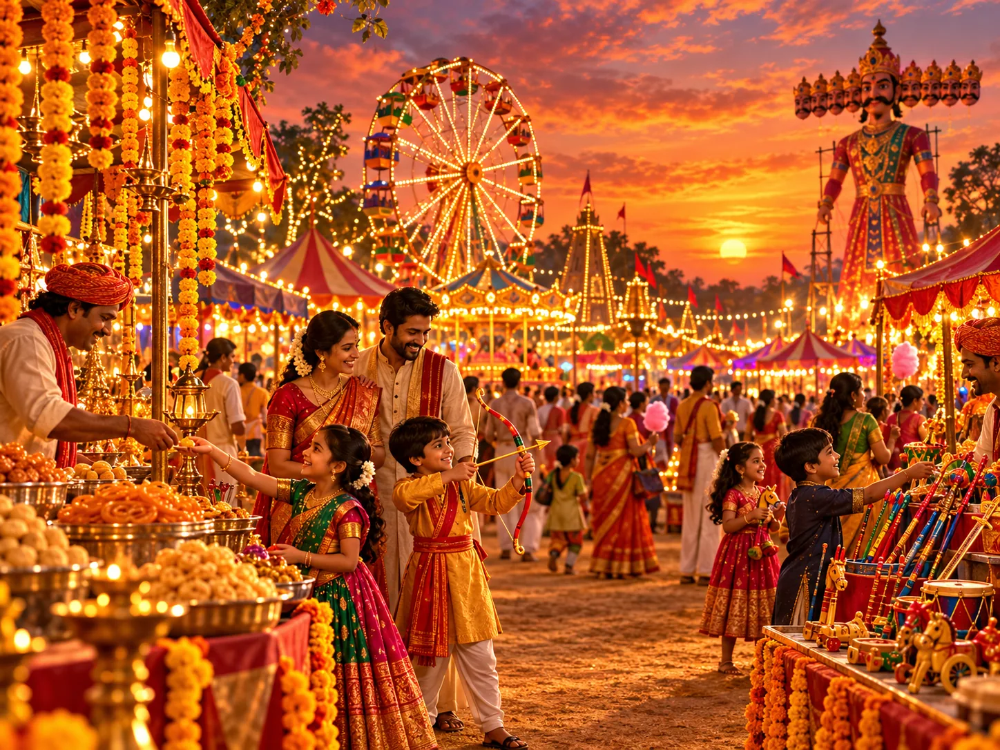
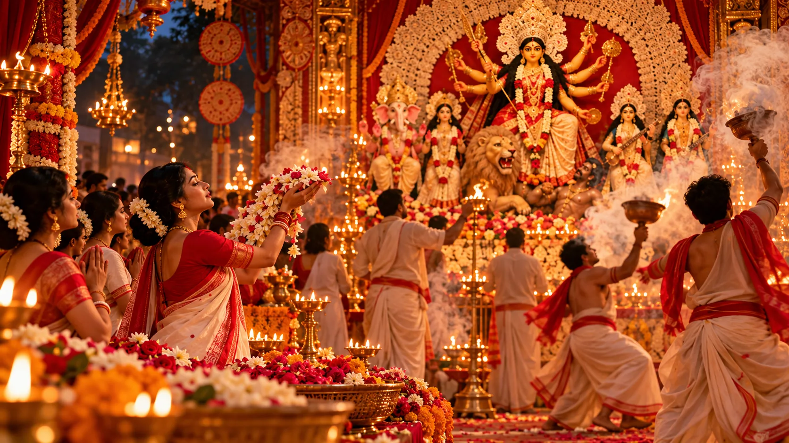
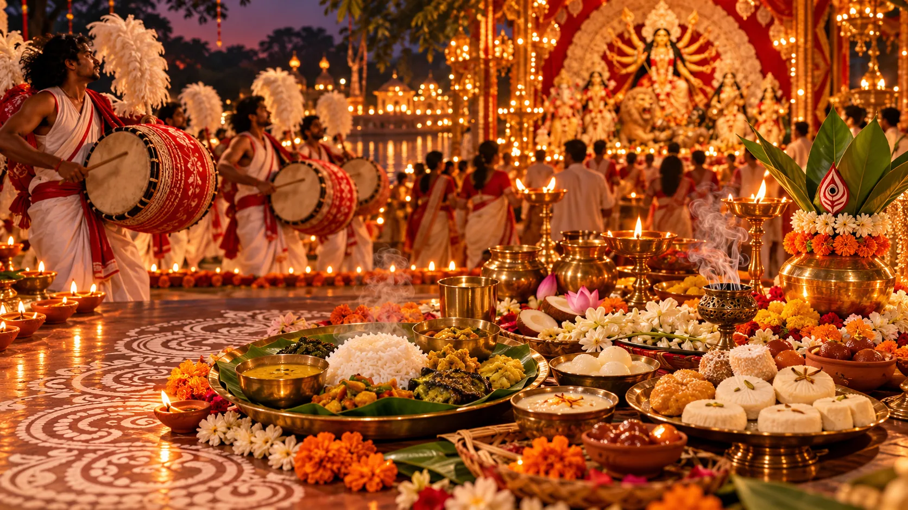
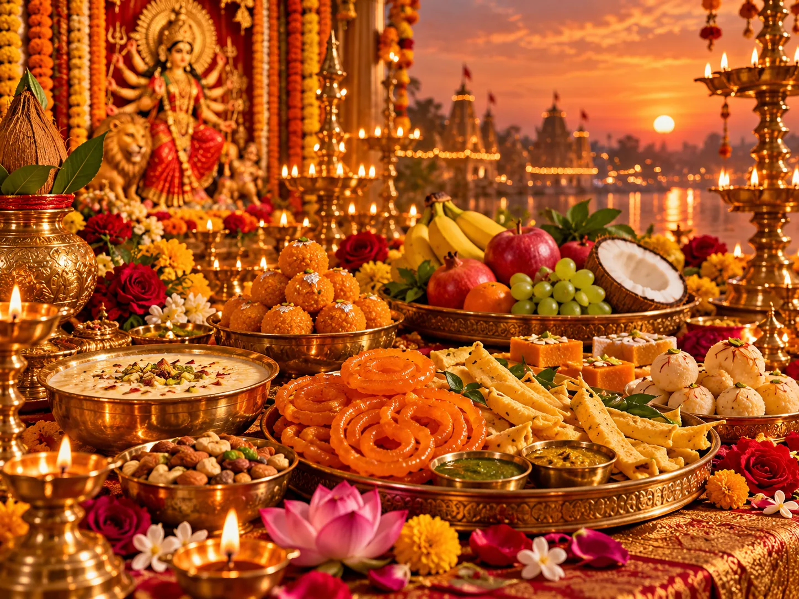
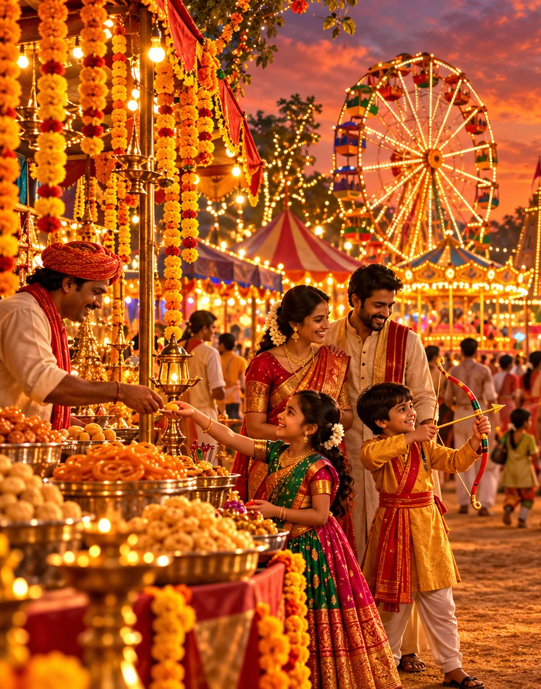

Vijayadashami means “victory on the tenth day”. Across India, this autumn celebration marks the victory of dharma over adharma, but its stories and customs vary strikingly. In the north, Ramlila culminates in the defeat of Ravana; in Shakta traditions, Durga’s victory over Mahishasura is central; in southern regions, tools, learning and work receive special reverence. These are related cultural traditions, not a single identical ceremony.
2026: Dates to remember
11–19 OctNavratri (nine nights)
19–20 OctNavami / Ayudha Puja, regional
20 OctDussehra / Vijayadashami (many regions)
21 OctBengali Bijoya Dashami
01 · Explore the tradition
The two great victory narratives

Lord Rama’s victory over Ravana belongs to the Ramayana tradition. After Sita’s abduction and a long struggle aided by Lakshmana, Hanuman and the vanara allies, Rama defeats Ravana. Dussehra retellings emphasise courage, loyalty and the difficult duty of choosing what is right. In the Devi Mahatmya tradition, the Divine Mother defeats Mahishasura after the gods seek her help. Her victory celebrates protective divine strength. Neither account should be treated as the sole explanation of every region’s Vijayadashami.
02 · Explore the tradition
Ramlila, Ravana Dahan and public theatre

Across many north Indian towns, communities stage Ramlila—dramatic retellings of Rama’s story—over several evenings. On Dussehra, large effigies of Ravana, often with Kumbhakarna and Meghanada, are burned as a symbolic end to arrogance and injustice. Productions differ widely: some are deeply devotional, others communal fairs with music and food. Fireworks and effigy burning are organised public events and should be left to trained organisers.
03 · Explore the tradition
From Navratri to the victory of Devi

After nine nights of honouring the Divine Mother, many devotees recognise Dashami as the celebration of her victory. Worship may include prayers to Durga or Aparajita. In Bengal, the related Bijoya farewell and immersion are generally marked on 21 October in 2026, with an emotional homecoming-and-departure meaning. Explore our separate Bengali Puja guide for Devi Baran, sindoor khela and the tradition of Shubho Bijoya.
In parts of southern India, families and workplaces clean and respectfully arrange the tools that sustain their livelihoods—books, instruments, farming equipment, machines or vehicles. Ayudha Puja is often observed on Navami, with Vijayadashami linked to beginning study, music or a new undertaking. The timing and rituals vary by place. The deeper idea is gratitude for knowledge, disciplined work and the means through which we serve others.
05 · Explore the tradition
One festival, many regional celebrations

Mysuru Dasara: Karnataka’s famed royal and civic festivities feature cultural events and a grand procession. Kullu Dussehra: Himachal Pradesh gathers regional deities for celebrations traditionally beginning around Vijayadashami and extending beyond one day. Bastar Dussehra: Chhattisgarh’s lengthy celebration centres local goddess Danteshwari and community practices rather than Rama’s battle. Bengal: Bijoya gives the victory day a tender language of farewell, embraces and blessings. Nepal: Dashain has its own extended family and blessing traditions.
06 · Explore the tradition
How the ten-day arc unfolds

Navratri: nine nights of prayer, singing and worship, with practices varying by household and region. Navami / Mahanavami: concluding worship and, in some places, Ayudha Puja. Vijayadashami / Dussehra: public celebrations of victory, visits to elders, community theatre and auspicious beginnings. These are broad patterns—not a universal timetable; always follow your local temple or panchang for ritual observances.
07 · Explore the tradition
Why the bow, the shami leaf and the book matter

Rama’s bow evokes discipline and action guided by principle. In several regions, the shami tree and the exchange of leaves are associated with prosperity, friendship or the return of the Pandavas’ concealed weapons in epic retellings. In Maharashtra, exchanging “gold” leaves (often apta leaves) expresses goodwill. Books, musical instruments and tools represent learning, Saraswati’s grace and respect for honest work. Symbols vary, and their popular explanations often differ from region to region.
08 · Explore the tradition
Food, fairs and the joy of being together

Dussehra is also lived through neighbourhood gatherings, festive markets, sweets, prasad and shared meals. Food differs enormously: jalebi, seasonal snacks and savouries may appear at northern fairs, while different southern and western households prepare their own festive offerings. There is no one authentic national Dussehra menu. Hospitality, community and generosity are the common threads.
09 · Explore the tradition
Celebrating meaningfully today

Read or watch a thoughtful telling of the Ramayana; learn what your local community’s tradition actually commemorates; honour a teacher, craftsperson or tool that helps you learn and work; visit a community event; share sweets; and choose one habit—anger, pride or avoidance—to confront. If attending an effigy-burning event, keep a safe distance and follow local safety instructions.
A greeting to share
Share this unbranded greeting with loved ones. No website address or Sanatana Series watermark appears on the card.
Dates, local observances and individual family traditions vary. Check a local panchang for ritual timings. The original images are artistic illustrations, not historical documentary photographs.